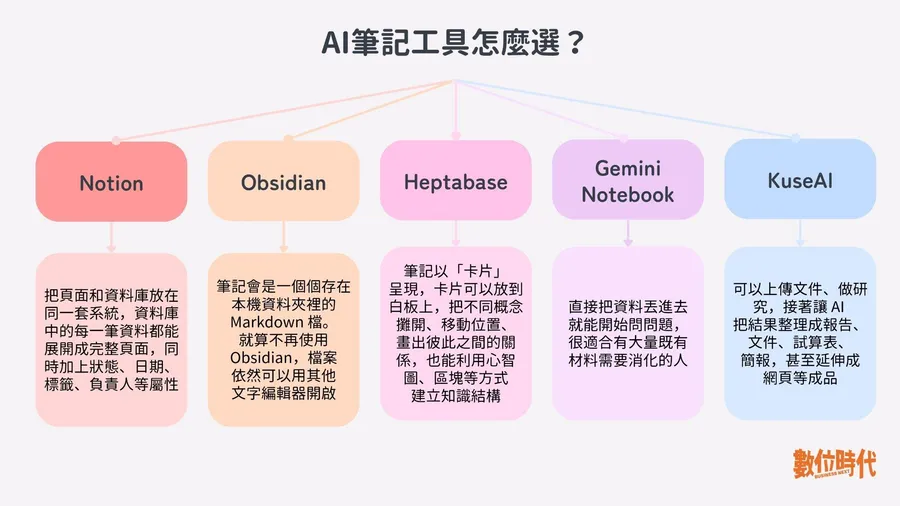

數位時代｜AI 筆記工具比較：Notion、Obsidian、Heptabase、Gemini Notebook、Kuse AI

一句話摘要
這篇把 Notion、Obsidian、Heptabase、Gemini Notebook 與 Kuse AI 分成「長期知識庫」與「專案工作型 AI 工具」兩大類，幫助使用者依照團隊協作、資料自主、視覺化思考、研究閱讀或內容產出來選工具。
為什麼保存
這篇很適合放入 AI 學習雷達，因為它不只比較筆記軟體功能，也牽涉到個人知識管理、AI 研究工作流、資料自主權、協作與 MCP／AI 工具串接。未來可作為課程、企業導入或個人 PKM 系統設計的參考入口。
原文核心分類
- 知識庫型：Notion、Obsidian、Heptabase。適合建立可長期擴張、跨主題累積的知識系統。
- 專案工作型：Gemini Notebook、Kuse AI。適合圍繞一批資料或特定任務，協助理解、整理與產出成果。
五款工具怎麼選
| 工具 | 適合情境 | 優勢 | 主要限制 |
|---|---|---|---|
| Notion | 團隊文件、資料庫、專案管理、內容排程 | 頁面與資料庫整合，可切換表格、看板、日曆等視圖 | 資料庫越複雜，跨平台搬遷越麻煩；離線仍有限制 |
| Obsidian | 長期個人知識管理、研究、寫作、跨主題累積 | 本機 Markdown、資料自主、雙向連結、外掛彈性高 | 前期要自己設計系統；團隊協作能力較弱 |
| Heptabase | 複雜研究、考試整理、論文／書籍規劃、視覺化思考 | 卡片＋白板，適合把大量資訊攤開、重組與找關係 | 沒有可直接申請的永久免費方案；白板空間結構較難搬遷 |
| Gemini Notebook | 大量資料閱讀、研究、採訪準備、課程或財報整理 | 可加入 PDF、網站、YouTube、文件等來源，回答附引用，方便驗證 | 較不適合跨主題長期知識系統；多數功能仍需連線 |
| Kuse AI | 從研究到報告、文件、試算表、簡報、網頁與工作流 | 研究、製作成品與後續任務可在同一工作空間延續 | 目前無原生 iOS/Android App；不支援即時多人協作；高度依賴雲端 |
對欒帥的應用價值
- 可用來設計「AI 筆記工具選型」課程或企業內訓模組。
- 可和欒帥現有 Obsidian／知識庫／Hermes Agent 流程對照，梳理哪些資料放本機、哪些進團隊協作、哪些交給 AI 消化。
- Obsidian 的本機 Markdown 特性，特別適合與 Claude Code、Codex、Hermes Agent 等可讀取本機檔案的工具串接。
- Notion 與 Heptabase 透過 MCP 或外部 AI 工具串接的趨勢，值得追蹤作為「AI 知識工作台」案例。
- Gemini Notebook 與 Kuse AI 可作為「資料消化到成果產出」的 AI workflow 範例。
建議選型路線
- 需要多人共用、查詢、篩選、追蹤進度：選 Notion。
- 需要長期保存、資料可攜、本機 Markdown 與個人知識網：選 Obsidian。
- 需要拆解大量複雜資訊、用白板找結構：選 Heptabase。
- 需要快速讀懂一批資料並附引用驗證：選 Gemini Notebook。
- 需要從研究一路產出文件、簡報、表格、網頁與後續任務：選 Kuse AI。
後續補完方向
- 補一張「欒帥個人知識工作流」：LINE 分享 → Hermes 歸檔 → Markdown 知識庫 → 公開 GitHub Pages → 私密 Obsidian／課程資料。
- 比較 Notion MCP、Heptabase MCP、Obsidian 本機檔案與 Gemini Notebook 匯出能力。
- 把工具分成「長期資料層」、「研究消化層」、「成果交付層」、「協作管理層」。
- 追蹤 Kuse AI 是否補上即時多人協作與手機 App。
原文連結
https://www.bnext.com.tw/article/91831/ai-notes-tool-difference-2026